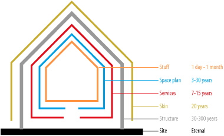

-
1989Tim Berners LeeA proposal to the world wide web
Tim Berners Lee een Engelse computer wetenschapper in de jaren ’80, werkzaam bij Cern, kwam eind jaren ’80 met een voorstel om informatie op grote schaal beter te beheren genaamd: “Title information management: A proposal”. Dit voorstel werd goedgekeurd door leidinggevende Mike Sendall wat uiteindelijk uitgroeide tot het Wereld Wijde Web.
-
1994Steward BrandHow buildings learn
Steward Brand een schrijver die het idee van de architect Frank Duffy adapteerde: Een goede duurzame bouwconstructie opgebouwd uit verschillende lagen bestaande uit: site, structuur, aankleding, services, ruimte indeling en inhoud. Deze lagen waren ook toepasbaar op websites bestaande uit HTML, CSS en Javascript.
-
1994Håkon Wium LieCSS

Håkon Wium Lie, zoals Tim Berners Lee werkzaam bij Cern, zag goede potentie in het Wereldwijde Web en zijn taal HTML. Om te voorkomen dat HTML overspoeld zou worden door visuele functies bedacht hij samen met de Nederlander Bert Bos een nieuwe taal genaamd CSS (Cascading Style Sheet) samenkomst van een grote variatie aan visuele stijlen.
-
1996David SiegelCreating killer websites
In 1996 schreef de auteur David Siegel het boek Killer Websites. Met behulp van slimme tabellen en GIF hacks konden ontwerpers dezelfde ontwerpen dupliceren die ze voorheen alleen op papier maakten. Deze tabel opmaken werden later CSS opmaken. De ontwerpers waren inmiddels gewend geraakt dat website browsers verschillende formaten konden hebben.
-
1996Ethan Zuckermanpop-up
Ethan Zuckerman was een een jonge programmeur die in 1999 met de programmeertaal Javascript de pop-up bedacht: een nieuwe venster wat automatisch openende met een advertentie erin. Hiermee konden adverteerders hun boodschap in een venster laten verschijnen voor website bezoekers. 20 jaar later bood hij zijn excuses aan voor de pop-ups, omdat dit een vorm was van Javascript misbruik. Dit resulteerde in de ontwikkeling van adblock software in de browsers.
-
2007Steve jobsiPhone

In 2007 bedacht Apple CEO Steve Jobs de iPhone: een combinatie van een iPad, internet communicator en telefoon. Met dit apparaat kon door het wereldwijde web gebrowsd worden. Met de komst van iPhones werden aannames opnieuw ondervraagd zoals: schermgrootte, snelheid internet verbinding en plug-ins. Ontwerpers zagen desktop en mobiel niet meer als verschillende apparaten, maar als verschillende website ontwerpen.
-
2009Luke WroblewskiMobile First

Luke Wroblewski, Interface ontwerper bedacht vanwege de toename van mobiele apparaten de term “Mobile First” waarin eerst wordt uitgegaan van kleinste scherm, in dit geval een mobiel scherm met daarin de belangrijkste functies uit de content. Van daaruit wordt gewerkt naar steeds een groter wordende scherm zoals: een tablet en een desktop.
-
2010Ethan MarcotteResponsive Design
Ethan Marcotte, bedenker van de term “Responsive Design”, vanuit de Architectuur nam hij deze gedachte mee: gebouwen die zich aanpasten aan de behoeften van de bewoners. Deze gedachtegang werd later toegepast voor het optimaliseren van mobiele websites met behulp van flexibele grids, afbeeldingen en media queries (indicatie schermafmetingen).